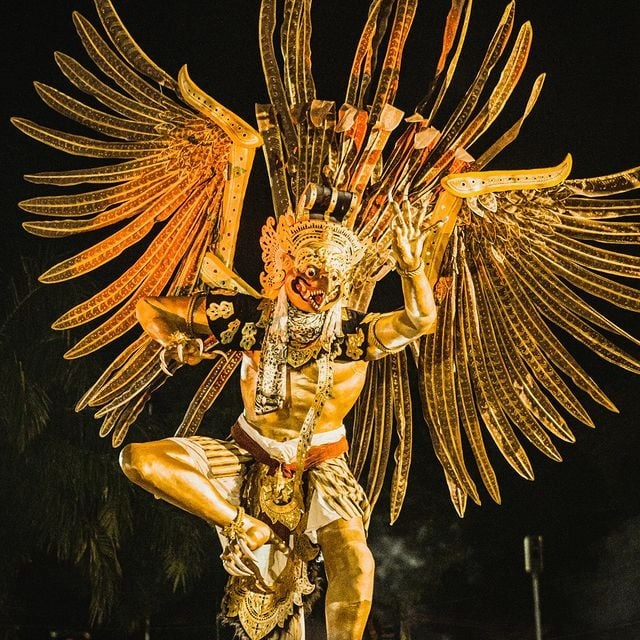

MATERI 02 / TRADISI & MAKNA
The story behind
Nyepi &
Ogoh-ogoh.
Bali punya cara unik untuk menyambut Tahun Baru Saka. Bukan dengan pesta besar, tetapi dengan keheningan.
Mulai membaca01 — NYEPI
When Bali
Goes Silent
Nyepi adalah Hari Suci umat Hindu di Bali yang menandai pergantian Tahun Saka. Pada hari ini, aktivitas di Bali berhenti dan suasana menjadi hening.
Selama Nyepi, umat Hindu menjalankan Catur Brata Penyepian, yaitu:
- Amati Geni
- Tidak menyalakan api atau cahaya.
- Amati Karya
- Tidak bekerja.
- Amati Lelunganan
- Tidak bepergian.
- Amati Lelanguan
- Tidak melakukan hiburan atau kesenangan.
What can we learn?
Nyepi mengajarkan introspeksi, pengendalian diri, ketenangan, dan menjaga keseimbangan dengan lingkungan.
“Sometimes, silence is the way to reconnect with ourselves.”
02 — OGOH-OGOH
More Than Just
a Giant Statue

Sehari sebelum Nyepi, masyarakat Bali biasanya mengadakan Pengerupukan. Salah satu hal yang paling menarik perhatian adalah pawai ogoh-ogoh.
Ogoh-ogoh merupakan karya berbentuk figur yang umumnya menggambarkan Bhuta Kala, simbol kekuatan atau sifat negatif yang perlu dikendalikan.
Ogoh-ogoh kemudian diarak dalam suasana ramai sebagai bagian dari rangkaian Pengerupukan.
What's the meaning?
Ogoh-ogoh dapat dimaknai sebagai simbol mengendalikan sifat negatif dalam diri dan membersihkan lingkungan sebelum memasuki hari Nyepi.
Jadi, ogoh-ogoh bukan sekadar patung untuk dipamerkan. Di balik bentuknya yang besar dan menarik, ada pesan tentang keseimbangan dan pengendalian diri.
From noise to silence.
From chaos to balance.
MINI GAME / 5 PERTANYAAN
How well do you
know Nyepi?
Pilih jawabanmu dan temukan makna di balik tradisinya.